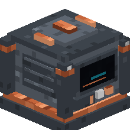
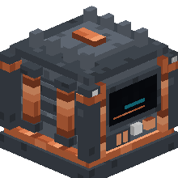
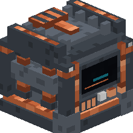
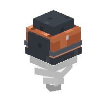
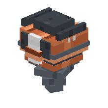
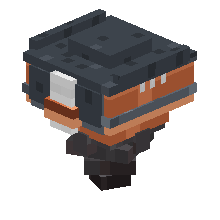
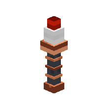

HomeLink Quarry 1.4.0
Adds a physical quarry: a visible mining head moves above the area and mines one block at a time, layer by layer, from the Start Y down to the Stop Y. Drops pass through a 27-slot buffer.
CurseForge: publication under review.
Tiers#
The Quarry tier sets only the area, the Head sets only the speed: all 9 combinations are possible, with no durability on the heads.
| Quarry | Maximum area |
|---|---|
| Quarry I | 8×8 |
| Quarry II | 16×16 |
| Quarry III | 32×32 |
| Mining head | Speed |
|---|---|
| Head I | 1 block / 10 s |
| Head II | 1 block / 6 s |
| Head III | 1 block / 3 s |
Fuel (coal, charcoal, coal block, lava bucket, any furnace fuel) only sets the run time, never the speed.
Getting started#
- Place the Quarry, screen facing the player, output at the back.
- With a Quarry Marker: Corner A (right-click), Corner B (sneak + right-click), then right-click the Quarry to apply.
- Output view: install the Head and fuel. Area view: set the Stop Y and preview the volume.
- Start / Pause / Resume / Stop. Stopping keeps the job; changing the area starts a new one.
Safety#
Never mined: bedrock, portals, portal frames, command and structure blocks, jigsaw, barrier, reinforced deepslate, fluids. The list is extensible via the homelink_quarry:quarry_blacklist tag. Every block goes through the standard break event (server protections are respected). The Quarry never force-loads a chunk: it waits if its target is unloaded.
Automatic output#
The buffer empties automatically into a compatible input placed against the back (tag homelink_quarry:item_inputs), which includes the Storage Deposit from HomeLink Storage when that mod is installed, with no code dependency.
Recipes#
Icons: 3D render of the blocks, as in the inventory. The badge shows the block's tier.







HomeCore#
The Quarry is a HomeCore device (homelink_quarry:quarry) exposing 19 metrics, the Start/Pause/Resume/Stop actions and 12 events published on transitions.
Install#
Install homelink_quarry-1.4.0.jar, homelink_energy-0.5.0.jar and homecore-1.14.0.jar into mods, client and server.
Gallery#
In-game captures. Click to enlarge.